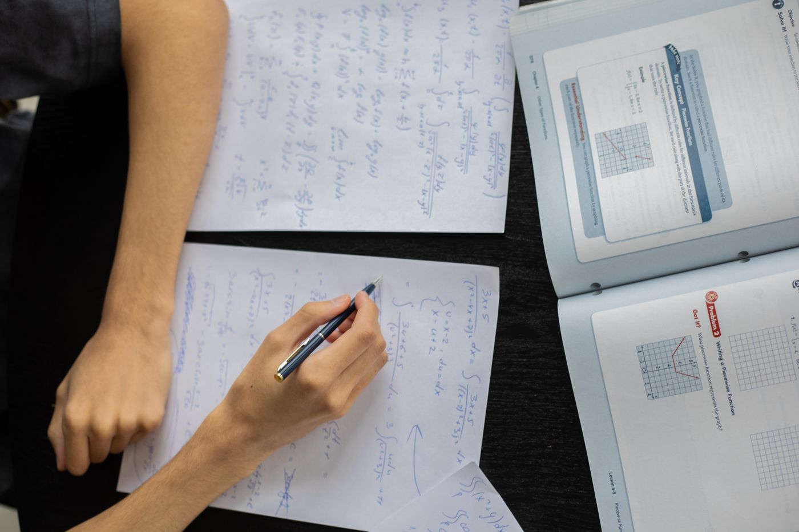
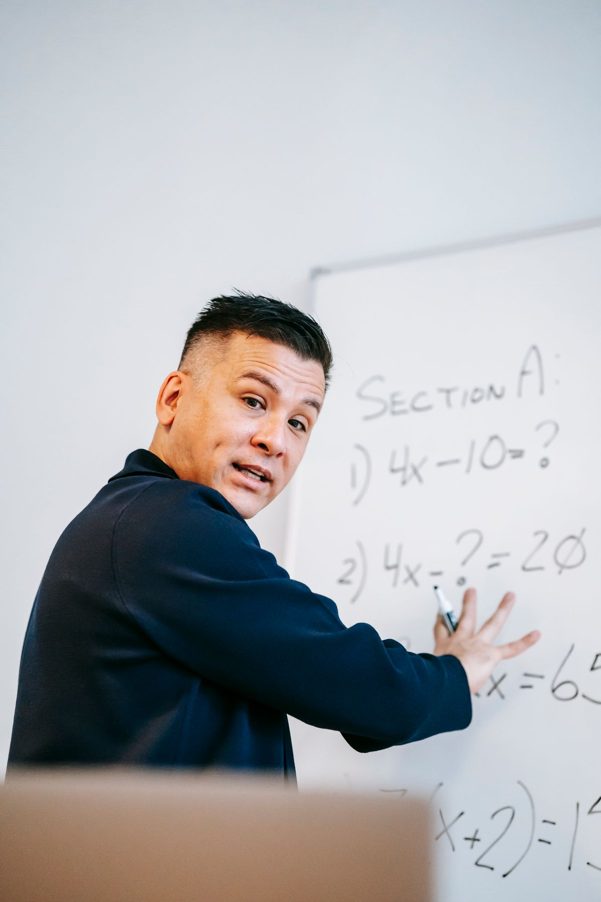

Math, one step at a time.
막힌 단원부터 다시 푸는 초5 – 고2 수학학원
Semteul math lab · 목동
한 반 8명, 주 2회 3시간. 매주 금요일은 그 주에 틀린 문제만 다시 푸는 클리닉입니다.
Free test?무료 진단 50분Everyone gets stuck somewhere different. We start there.
진단 테스트로 처음 막힌 단원을 찾고, 그 단원부터 다시 쌓습니다. 선행은 그다음입니다.
One room, eight desks.
목동역 7번 출구 앞, 4층 교실 두 칸이 전부입니다.

- Address
- {{ADDRESS|서울특별시 양천구 목동동로 00, 4층}}
- Hours
- {{HOURS|평일 15:00–22:00 · 토 10:00–18:00}}
- Call
- {{PHONE|02-2649-7308}}
From the front of the room
모든 반의 첫 수업과 금요일 클리닉은 원장이 직접 맡습니다. 칠판에 쓰는 것보다 아이 공책을 들여다보는 시간이 더 깁니다.
{{OWNER|장서진}}원장 · 중등·고등 수학 담당

Four tracks
학년이 아니라 진단 결과로 반을 정합니다.
- Grade 5–6
Number sense
분수·소수 연산과 비와 비율. 중학교 가기 전 빈틈 메우기.
화·목 16:00–19:00
- Middle 1–2
Equations
방정식·함수·도형의 성질. 학교 진도 한 단원 앞.
월·수 17:00–20:00
- Middle 3 – High 1
Bridge
중3 이차함수에서 고1 공통수학으로 넘어가는 반.
화·목 19:00–22:00
- High 2
Calculus basics
수Ⅰ·수Ⅱ 내신 대비. 시험 4주 전부터 토요일 추가.
월·수 19:00–22:00
This term, week by week
중2 Equations 반의 이번 학기 진도입니다. 반마다 같은 표를 교실 벽에 붙여 둡니다.
- Week 1–3연립방정식
가감법·대입법, 활용 문제 12유형
Done - Week 4–6일차함수와 그래프
기울기·절편, 두 직선의 교점
Now - Week 7중간고사 대비
학교별 기출 두 회 · 토요일 추가 3시간
Next - Week 8–10도형의 성질
이등변삼각형 · 외심과 내심
Next
Where a wrong answer goes
- Mark · 채점
수업 끝나기 10분 전, 그날 푼 문제를 선생님이 바로 채점합니다.
- Sort · 분류
틀린 이유를 계산 · 개념 · 문제 읽기 셋 중 하나로 표시합니다.
- Rewrite · 오답노트
문제를 오려 붙이지 않고, 풀이만 다시 씁니다.
- Retry · 금요일 클리닉
일주일 뒤 숫자를 바꾼 같은 문제를 한 번 더 풉니다.
처음 오시는 부모님이 가장 많이 묻는 세 가지
Eight desks
한 반 8명을 넘기지 않습니다. 자리가 차면 대기 명단에 올리고 순서대로 연락드립니다.
Monthly call
매달 마지막 주, 담당 선생님이 전화로 한 달 오답 분류표를 읽어 드립니다.
No skipping
진단에서 빈틈이 나온 단원은 선행보다 먼저 합니다. 한 달이면 대개 메워집니다.